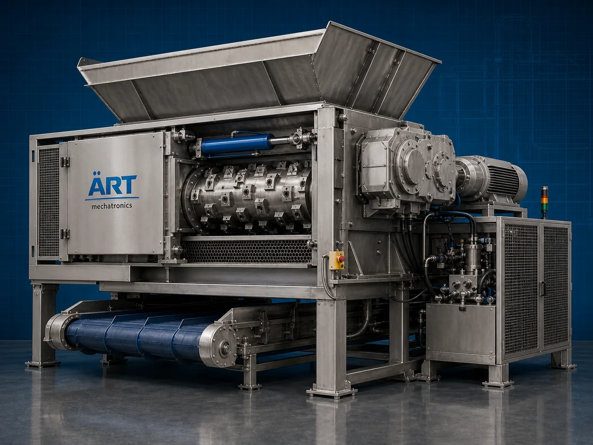

Shredder Machine (Industrial Shredding & Size Reduction System)
A Shredder Machine, also known as an Industrial Shredder, Material Shredding Machine, Industrial Waste Shredder, or Size Reduction System, is an advanced industrial processing solution designed for shredding, crushing, tearing, cutting, granulation, recycling, waste reduction, and high-capacity…

About the Shredder Machine
Shredder systems are widely used for: ✔ Plastic waste shredding ✔ Rubber and tyre shredding ✔ Paper and carton shredding ✔ Wood and biomass size reduction ✔ Metal scrap shredding ✔ Industrial waste recycling ✔ Packaging material shredding ✔ Continuous industrial material processing
The machine improves: ✔ Material size reduction efficiency ✔ Recycling productivity ✔ Waste handling capacity ✔ Production efficiency ✔ Material processing consistency ✔ Industrial automation performance ✔ Environmental sustainability
Industrial shredder machines use: ✔ Heavy-duty shredding blades and cutters ✔ High torque drive systems ✔ PLC and HMI automation controls ✔ Multi-shaft shredding mechanisms ✔ Rugged industrial construction
to automatically shred and process materials with superior efficiency and high industrial productivity.
Shredder machines are widely used in industries such as:
Plastic recycling industries Rubber industries Wood processing industries Paper industries Biomass industries Packaging industries Metal recycling industries Industrial waste management industries
where high-capacity shredding, continuous operation, and efficient material recycling are essential.
The machine is highly suitable for: ✔ Plastic scrap shredding ✔ Industrial waste reduction ✔ Biomass processing ✔ Paper and carton shredding ✔ Rubber and tyre recycling ✔ Industrial recycling automation systems
ART Mechatronics offers high-performance shredder machines, engineered for continuous industrial operation, heavy-duty shredding performance, rugged construction, and reliable long-term industrial productivity.
Working Principle of Shredder Machine
- 1. Material Feeding & Loading Raw materials or waste products are automatically or manually fed into shredding chamber for processing operation.
- 2. Material Tearing & Shredding Process Machine automatically tears, cuts, crushes, and shreds materials using heavy-duty rotating cutters and high torque drive systems.
Precision synchronization ensures smooth material flow and efficient shredding operations.
- 3. Shredding & Size Reduction Operation Machine handles processing of: ✔ Plastic materials ✔ Rubber products ✔ Paper and cartons ✔ Wood materials ✔ Biomass products ✔ Packaging waste ✔ Metal scrap ✔ Industrial waste materials
accurately and continuously.
- 4. Size Reduction & Recycling Process Machine performs: Shredding Crushing Tearing Granulation Volume reduction Waste processing
for efficient industrial recycling and material handling operations.
- 5. Intelligent Automation & Safety Integration Optional systems include: Dust extraction systems Automatic feeding systems Hydraulic push systems Safety guarding systems Noise reduction systems
- 6. Finished Material Discharge Processed shredded materials discharged automatically for: Recycling operations Granulation systems Packaging processes Storage silos Export shipment handling
Types of Shredder Machines
- 1. Plastic Shredder Machine Designed for: ✔ Plastic recycling and waste processing applications
- 2. Double Shaft Shredder Machine Suitable for: ✔ Heavy-duty industrial shredding operations
- 3. Wood & Biomass Shredder Machine Uses: ✔ Biomass processing and wood waste reduction systems
- 4. Paper & Carton Shredder Machine Designed for: ✔ Packaging and paper waste shredding systems
- 5. Metal Scrap Shredder Machine Suitable for: ✔ Industrial metal recycling operations
- 6. Fully Automatic Industrial Shredding System Designed for: ✔ Complete recycling and waste management automation lines
Industries Using Shredder Machines
♻️ Plastic Recycling Industry Plastic scrap processing, recycling operations, and waste reduction systems. 🪵 Wood & Biomass Industry Wood waste processing, biomass preparation, and industrial shredding systems. 📦 Packaging Industry Carton shredding, packaging waste processing, and recycling systems. 📄 Paper Industry Paper waste shredding and industrial recycling operations. ⚙️ Rubber & Tyre Industry Rubber recycling, tyre shredding, and industrial waste processing systems. 🏭 Industrial Waste Management Industry Industrial scrap handling and material recycling systems.
Features & Advantages
✔ High-capacity automatic shredding operation ✔ Heavy-duty industrial shredding blade systems ✔ Accurate and efficient material size reduction ✔ PLC and automation control systems ✔ Improves recycling productivity and waste handling efficiency ✔ Reduces manual waste processing dependency ✔ Supports multiple industrial materials and applications ✔ Reliable long-term industrial performance ✔ Smooth integration with industrial recycling lines
Technical Highlights
Machine Type: Shredder machine Industrial shredding system Material size reduction machine Material Compatibility: Plastic materials Rubber products Paper and cartons Wood materials Biomass products Metal scrap Industrial waste materials Integration: Heavy-duty shredding blades Hydraulic feeding systems Automatic feeding systems Dust extraction systems Features: PLC control system Touchscreen HMI High torque drive systems Rugged steel construction Noise reduction systems Applications: Shredding Waste reduction Industrial recycling Material size reduction Scrap processing Biomass preparation Automation: Semi-automatic Fully automatic industrial systems
Turnkey Shredding Solutions
ART Mechatronics offers: Complete industrial shredding systems Automatic waste processing solutions Industrial recycling automation systems Dust handling integration systems Installation & commissioning After-sales service & AMC
Why Choose Art Mechatronics
Expertise in industrial processing and automation systems Customized shredding solutions for multiple industries High-performance and rugged shredding technology Advanced PLC and automation systems Proven industrial recycling performance across sectors
Applications
Plastic Recycling Plants Wood & Biomass Processing Units Paper Recycling Facilities Industrial Waste Management Plants Packaging Waste Processing Industries Metal Recycling Industries
Related Process Equipment machines
Get pricing & specs for the Shredder Machine
Share the product, target capacity, current process and plant location. These details help our engineers discuss the right machine or line configuration.
One partner, from design to start-up
ART Mechatronics designs, manufactures, installs and commissions your Shredder Machine solution with regional presence in India, UAE and Thailand.